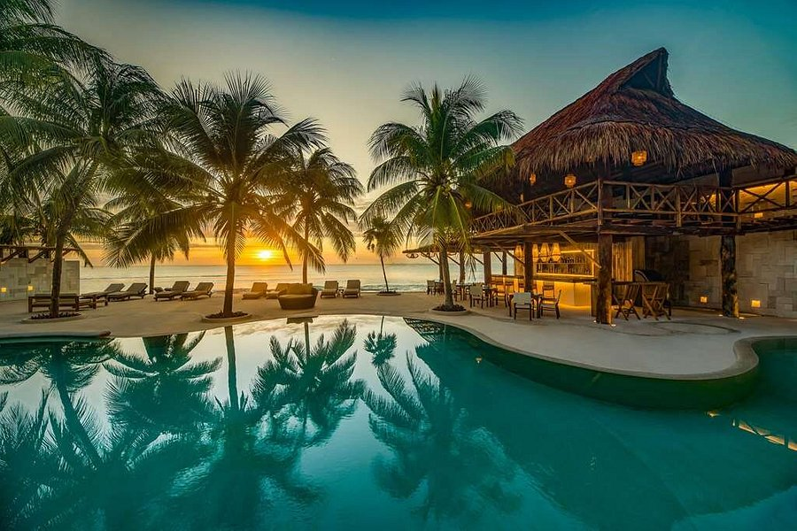

Entrada
Riviera Maya
La Riviera Maya es una extensión de la costa del Caribe en la península de Yucatán al noreste de México. Es conocida por sus numerosos centros turísticos con todo incluido, como los de la Playa del Carmen, y sus largas playas. Al sur, Tulum tiene retiros de yoga y las ruinas conservadas de una antigua ciudad puerto maya, ubicada en un afloramiento sobre una playa de arena blanca.
Barcelona
Barcelona, la capital cosmopolita de la región de Cataluña en España, es conocida por su arte y arquitectura. La fantástica iglesia de la Sagrada Familia y otros hitos modernistas diseñados por Antoni Gaudí adornan la ciudad. El Museo Picasso y la Fundación Joan Miró muestran el arte moderno de los artistas que dan origen a sus nombres. El Museo de Historia de Barcelona (MUHBA) incluye varios sitios arqueológicos romanos.

Bali
Bali es una isla de Indonesia conocida por sus frondosas montañas volcánicas, los icónicos arrozales, las playas y los arrecifes de coral. La isla alberga sitios religiosos, como el templo Uluwatu en un acantilado. Al sur, la ciudad costera de Kuta tiene bares encendidos, mientras que Seminyak, Sanur y Nusa Dua son ciudades turísticas populares. La isla también es famosa por sus lugares de retiro para el yoga y la meditación.

Bangkok
Bangkok, la capital de Tailandia, es una extensa ciudad conocida por los santuarios ornamentados y la animada vida callejera. El río Chao Phraya, lleno de botes, alimenta su red de canales y pasa por el distrito real de Rattanakosin, donde se encuentra el Gran Palacio y su templo sagrado Wat Phra Kaew. Cerca de allí, se ubica el templo Wat Pho, con un enorme Buda inclinado y, en la orilla opuesta, el templo Wat Arun, con sus empinados escalones y su chapitel de estilo Khmer.